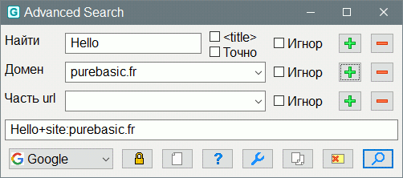

AdvancedSearch
Назначение
Инструмент для быстрого поиска формируя поисковой запрос.

Команда для запуска операции
AdvancedSearch.exe [word [domain]]
Формат запроса поисковика
С форматом запросов можно познакомиться на официальных страницах поисковиков:
Некоторые популярные теги синтаксиса запросов поддерживается всеми поисковыми движками, например:
site:домен - определяет домен, в котором произвести поиск. Возможно движок имеет ввиду именно "сайт", то есть поиск на неком сайте, т.е. "домен\папка\папка".
-слово или -"какая-либо фраза" - предшествующий минус ищет сайты, в тексте которых нет этого слова/фразы. Например "замок", если вам нужен "средневековый замок", а не "замок на дверь", то можно задать поисковой запрос "замок -ключ -навесной" и т.д., то есть добавить ключевые слова связанные с замком со знаком минус.
"фраза в кавычках" - кавычки определяют точное совпадение. Поисковой запрос может искать однокоренные слова с разными приставками, суфиксами и окончаниями, а если это фраза, то слова по тексту могут быть в разных местах. Чтобы искать точное слово или фразу нужно заключить в кавычки.
intitle:слово - поиск в заголовках, тот что отображается в имени вкладки страницы в браузере. Тоже что в форумных поисковиках поставить флаг "Искать только в заголовках тем" т.е. не в постах.
Яндекс имеет ключевые слова url: host: rhost: domain:
Google имеет ключевое слово inurl:text, т.е. в ссылке должен присутствовать этот текст.
Параметры
word - слово для поиска.
domain - домен или перечисление доменов через запятую.
Если без параметров, то слово берётся из буфера обмена, при clipboard=1 в ini-файле.
Язык
Использовать Lang.txt файл, чтобы задать свой язык. Пример файла есть в комплекте.
Используйте forcelang=2, чтобы выбирать один из двух встроенных языков принудительно.
Горячие клавиши
Enter - нажатие кнопки "Найти", если она активна. Если активно поле ввода, то также активирует поиск.
F1 - вызов справки. В Windows откроется AdvancedSearch.chm, в Linux либо index.html из папки конфига если существует, либо установленный в папку документации.
F2 - вызов черновика AdvancedSearch.txt из папки конфига если существует.
Ctrl+Backspace - очистить поле слова и установить на него курсор для ввода слова.
Использование в AkelPad
Добавить пункт меню:
"AdvancedSearch" Exec(`"%a\AkelFiles\Tools\AdvancedSearch\AdvancedSearch.exe"`) Icon("%a\AkelFiles\Tools\AdvancedSearch\AdvancedSearch.exe")
Использование в PureBasic
AdvancedSearch.exe "%WORD" purebasic.fr
Использование в SciTE
Чтобы использовать инструмент в SciTE откройте файл AutoIt\SciTE\Properties\au3.properties и найдите там перечисление инструментов. На их основе создаём свой. Важно указать правильно номер инструмента, который в ниже в конфиге указан как 35. Это может быть другой номер.
# 35 AdvancedSearch
command.35.$(au3)="$(SciteDefaultHome)\Tools\AdvancedSearch.exe" "$(CurrentWord)" autoitscript.com
command.name.35.$(au3)=AdvancedSearch
command.shortcut.35.$(au3)=Ctrl+Shift+N
command.subsystem.35.$(au3)=2
command.save.before.35.$(au3)=2
command.replace.selection.35.$(au3)=0
command.quiet.35.$(au3)=1
$(SciteDefaultHome) это папка где находится SciTE.exe, здесь можно указать прямой путь.
Параметр $(CurrentWord) - текущее слово (для поиска).
AdvancedSearch - имя пункта отображаемое в меню Tools редактора SciTE
Ctrl+Shift+N - горячая клавиша
Использование в Notepad++
Чтобы использовать инструмент в Notepad++ откройте файл %APPDATA%\Notepad++\shortcuts.xml и добавьте ниже приведённую строку.
<Command name="AdvancedSearch" Ctrl="yes" Alt="no" Shift="yes" Key="68">"$(NPP_DIRECTORY)\Tools\AdvancedSearch.exe" "$(CURRENT_WORD)" purebasic.fr</Command>
$(NPP_DIRECTORY) это папка где находится notepad++.exe, здесь можно указать прямой путь.
Параметр $(CURRENT_WORD) - текущее слово (для поиска)
AdvancedSearch - имя пункта отображаемое в меню "Запуск" редактора Notepad++
Ctrl="yes" Alt="no" Shift="yes" Key="68" - это горячая клавиша Ctrl+Shift+D
Описание ini-файла
[gui] ; секция параметров окна
width = 590 ; Ширина окна
height = 210 ; Высота окна
clipboard = 1 ; Взять слово из буфера обмена при отсутсвии параметров ком-строки.
idxres = 1 ; Выбирает поисковик по номеру в списке.
Exit = 1 ; Закрыть программу после нажатия кнопки "Найти".
OR = 1 ; Использует оператор OR вместо пробела при множестве доменов.
editor = путь ; редактор с помощью которого будут открыты ini-файл или файл заметок. Поддерживается ком-строка с параметрами, но в этом случае путь с пробелами должен быть обрамлён кавычками. В Linux это может быть просто исполняемый файл.
browser = путь ; браузер, с помощью которого будут открыты справка (в Linux), ссылка поисковика. Поддерживается ком-строка с параметрами, но в этом случае путь с пробелами должен быть обрамлён кавычками. В Linux это может быть просто исполняемый файл.
forcelang = 0 ; 0-автоматически, 1-принудительно английский, 2-принудительно русский.
urlencoder = 1 ; 0 - ничего не делать, 1 - преобразовать ссылку в бинарный вариант.
separator = 1 ; задать разделитель слов, по умолчанию пробел, если указан "+" (без кавычек), то должен быть urlencoder=0, иначе разделитель будет как символ в поисковой строке.
[searchstring] ; поисковые движки
Google = https://www.google.com/search?source=hp&q=%s&oq=%s
Yandex = https://yandex.ru/search/?text=%s
Duck = https://duckduckgo.com/?q=%s
Bing = https://www.bing.com/search?q=%s
Yahoo = https://search.yahoo.com/search?p=%s
msdn = https://learn.microsoft.com/ru-ru/search/?terms=%s&category=Documentation
FaganFinder = https://www.faganfinder.com/
Mediasova = https://search.mediasova.com/
Baidu = http://www.baidu.com/s?wd=%s
; и т.д.
[domain] ; список доменов
0 = ; Оставить поле пустым чтобы изначально не использовать домен.
1 = purebasic.fr
2 = purebasic.mybb.ru
3 = cyberforum.ru
4 = purebasic.fr,purebasic.mybb.ru ; Перечисление доменов через запятую.
[inurl] ; фильтр по тексту в URL
1 = purebasic.fr/french
2 = purebasic.fr/german
3 = purebasic.fr/english